Dodáváme a servisujeme certifikované počítačky bankovek, vysokorychlostní třídičky mincí s CCD SELEX a detektory padělků testované v Evropské centrální bance a České národní bance. Více než 7 500 instalací v ČR a SR.
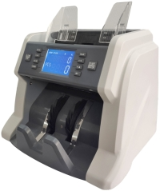
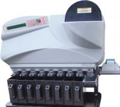
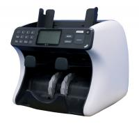
Firma K.o.T.a.S se již od svého založení v roce 1990 profilovala jako specialista na malou bankovní techniku. V témže roce jsme podepsali výhradní kontrakt s americkou společností BRANDT pro distribuci a servis bankovní techniky v České a Slovenské republice.
Dlouhodobá úzká spolupráce s japonským výrobcem TOYO COMMUNICATION Inc. umožnila firmě K.o.T.a.S aplikovat a úspěšně prodávat vlastní vyvinuté systémy v celosvětovém mezinárodním měřítku. Od roku 1999 se pravidelně prezentujeme na mezinárodním veletrhu CEBIT v Hannoveru.
Jako jediné české společnosti zabývající se vývojem a distribucí bankovní techniky nám bylo opakovaně umožněno v pobočce Evropské centrální banky (Deutsche Bundesbank ve Frankfurtu nad Mohanem) otestovat svá zařízení a verifikační čidla přímo na bankovkách EURO vyprodukovaných všemi tiskárnami cenin.
Kabinet platidel ČNB provedl opakované testy na všech známých typech padělků české měny všech tříd nebezpečnosti. Na základě úspěšných testů v ČNB máme oficiální svolení uvádět: systém zachytí 100 % všech dosud známých padělků české měny.
V roce 1997 se firma K.o.T.a.S začala zabývat vývojem systému pro verifikaci pravosti bankovek FALSE HUNTER (FH). Systém založený na vyhodnocování ochranných prvků v infračerveném spektru (IR) překvapil odbornou veřejnost a způsobil revoluci v oblasti malé bankovní techniky.
Kliknutím na fotografii otevřete detailní náhled zařízení. Všechny modely dodáváme včetně záručního a pozáručního servisu po celé ČR.
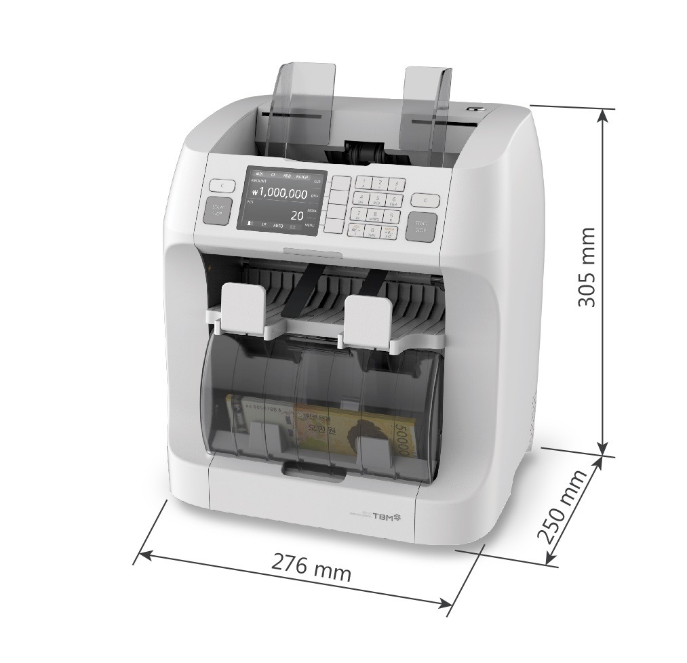
Certifikovaná dvoukapsová počítačka bankovek schválená Evropskou centrální bankou (ECB). Umožňuje plynulé nepřetržité zpracování hotovosti v českých i zahraničních měnách (EUR, USD) a dalších světových měn. Automatické rozpoznání nominálu i měny bez nutnosti manuálního přepínání. Vybavena patentovaným automatickým krytem odebírací přihrádky, který chrání obsluhu před polétavým prachem a výrazně snižuje hlučnost provozu.
Nová vysoce výkonná počítačka bankovek s vynikajícím poměrem ceny a kvality. Jednoduchá obsluha, mimořádně spolehlivý chod a velký přehledný LCD displej. Možnost počítání v nominálních hodnotách (hodnotové počítání netříděných bankovek) a okamžitý tisk protokolu o přepočtu.
Dvoukapsový kompaktní bankovní sorter a počítačka pro nepřetržitý provoz. Druhá odkládací kapsa (Reject) umožňuje vyřazovat podezřelé padělky, jiné nominály nebo poškozené kusy bez zastavení procesu počítání. Vhodné pro pokladny s velkým denním obratem.
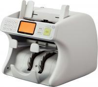
Osvědčený víceúčelový sorter bankovek určený pro finanční instituce a směnárny. Vícespektrální kontrola pravosti (UV, MG, infračervený obraz CIS a magnetický proužek). Rychlost až 1 500 bankovek za minutu s maximální přesností.
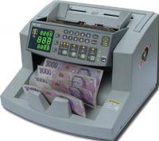
Profesionální systém NC-60 pro přesné vyřazování poškozených, popsaných či opotřebených bankovek během počítání dle striktních směrnic České národní banky (fitness sorting). Zaručuje, že do bankomatů a dalšího oběhu odchází pouze 100% způsobilé bankovky.
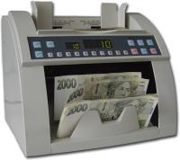
Odolná stolní počítačka bankovek pro střední a větší zátěž. Víceúrovňová detekce padělků včetně kontroly magnetického inkoustu a UV fluorescenčních prvků. Přehledný numerický panel s předvolbou dávkování.
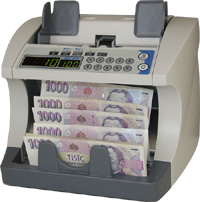
Kompaktní spolehlivá počítačka pro každodenní pokladní operace v maloobchodě. Integrovaná kontrola rozměrů bankovek, UV a magnetické čidlo. Tichý chod a nízká spotřeba energie.
Špičková vysokorychlostní třídička mincí K.o.T.a.S S3-MOON s revolučním bezkontaktním systémem detekce nepravých mincí CCD SELEX. Určena především pro banky, spořitelny, supermarkety a dopravní podniky. Mince roztřídí dle nominální hodnoty do samostatných výstupů, načte počty i celkové částky a vytiskne výčetku na připojené tiskárně.
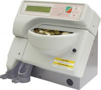
Kompaktní a tichá třídička mincí K.o.T.a.S S2 pro menší a střední pokladny. Spolehlivý mechanismus třídění do 8 přihrádek s funkcí automatického zastavení při naplnění zadané dávky.
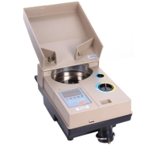
Vysokokapacitní počítačka mincí CS-1000 konstruovaná pro těžký provoz. Rychlost počítání až 2 300 mincí za minutu s robustním celokovovým podavačem a nastavitelnou tloušťkou i průměrem mincí.
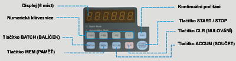
Průmyslová velkokapacitní třídička a počítačka mincí CS-2000 pro zpracovatelská centra hotovosti a velkoobchody. Extrémní spolehlivost a minimální nároky na údržbu.
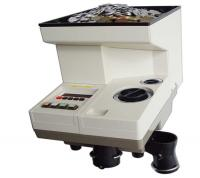
Spolehlivá stolní počítačka mincí K.o.T.a.S 1001 pro rychlé balení mincí do sáčků či ruliček. Velký vstupní zásobník a jednoduché intuitivní ovládání.
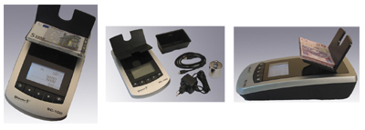
Přesná počítací váha K.o.T.a.S SC-100 pro bleskovou inventuru celé pokladní zásuvky (bankovky i mince) během několika vteřin. Výrazně zkracuje čas uzávěrek a eliminuje lidské chyby.
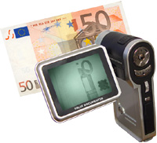
Kompaktní infračervená kamera FALSE DOCUMENTER pro vizuální verifikaci ochranných prvků bankovek, pasů, víz a dokladů na vestavěném monitoru v reálném čase.
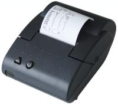
Rychlá termotiskárna K.o.T.a.S A630 pro přímé připojení k počítačkám a třídičkám. Okamžitý tisk detailního rozpisu hotovosti, data a jména pokladníka na standardní termopapír.
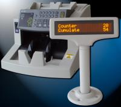
Externí zákaznický displej umožňující klientovi u přepážky nebo směnárny transparentně sledovat průběh a výsledek počítání hotovosti.
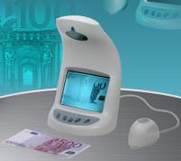
Stolní infračervený detektor pravosti K.o.T.a.S IRD-2200 pro okamžitou verifikaci bankovek všech světových měn v IR spektru přímo u pokladny.
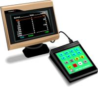
Speciální kalkulátor hotovostních toků pro optimalizaci pokladních zůstatků a plánování odvodů hotovosti.
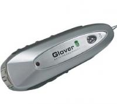
Kapesní tester bankovek MINI DP-323 pro terénní pracovníky, řidiče a kurýry. Zvuková a světelná signalizace podezřelého platidla během vteřiny.
Firma K.o.T.a.S zajišťuje záruční i pozáruční servis na celém území České republiky výhradně prostřednictvím svých stálých kmenových zaměstnanců. Náš servis je postaven na centrálním servisním dispečinku v Třinci a pěti regionálních servisních střediscích pokrývajících celou ČR.
Okamžité nahlášení požadavku, technická hotline a koordinace výjezdů servisních techniků po celé ČR.
Mobil: +420 601 532 022Regionální servisní základny pro rychlý dojezd technika do vašeho bankovního či pokladního provozu.
Dojezd servisního technikaAktualizace verifikačních algoritmů při vydání nových emisí bankovek ČNB a ECB, čištění a seřízení optických drah.
Autorizovaná kalibraceVyberte konkrétní zařízení z katalogu nebo popište svůj požadavek. Náš technik vás obratem kontaktuje.